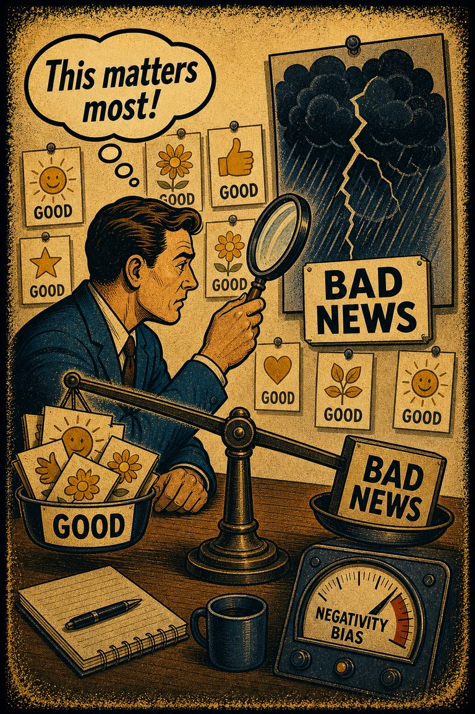
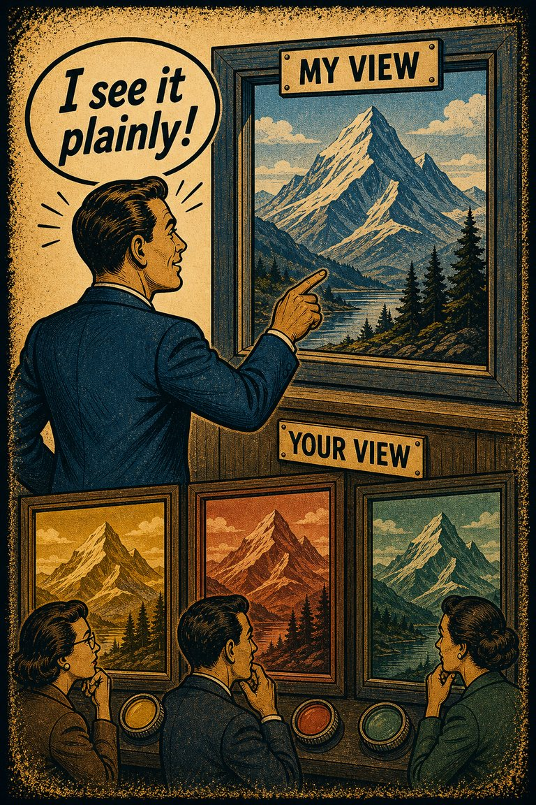

Common in live judgment
71
Especially active under stress, prior conflict, or perceived social threat.
Rare
Frequent

Cognitive Biases
A practical cognitive-bias site with clear definitions, learning paths, assessments, self-audits, and debiasing tools.
Cognitive Bias
The tendency to read ambiguous behavior as hostile, threatening, or intentionally disrespectful even when the evidence is underdetermined.
What it distorts
It bends conflict interpretation by turning ambiguity into motive certainty and by escalating situations that might have other explanations.
Typical trigger
Conflict, stress, prior betrayal, tribal tension, online exchanges, and settings where identity or status feels vulnerable.
First countermove
List at least two non-hostile explanations that still fit the observed behavior before endorsing the hostile one.
Coverage depth
Structured process
What else could explain this ambiguous behavior besides hostility?
When threat or grievance is salient, ambiguous cues get interpreted through a defensive lens. The mind closes the causal gap by supplying harmful intent faster than the facts justify.
These are classroom-facing editorial estimates for comparing how the bias behaves in use. They are teaching aids, not measured statistics.
Common in live judgment
71
Especially active under stress, prior conflict, or perceived social threat.
Easy to spot from outside
40
Often easier to diagnose after the alternative explanations are stated aloud.
Easy to innocently commit
83
The hostile reading can feel like realism rather than interpretation.
Teaching difficulty
52
Needs careful handling because genuine threat cases also exist.
This comparison makes the hidden pull easier to see before the technical label has to do all the work.
Biased move
This is like hearing static on the line and deciding the other person must be shouting.
Clearer comparison
Threat is one live interpretation, but it is not the only one. Ambiguity deserves comparison before motive gets locked in.
Do not use this label every time someone detects real hostility. Sometimes the hostile reading is correct. The issue is premature hostile interpretation under ambiguity when benign or mixed explanations have not been given fair weight.
Use this label when unclear actions, tone, or omissions are rapidly interpreted as attacks, disrespect, or malice before the situational field is seriously inspected.
Use the quick check, caveat, and nearby confusions together. The fastest diagnosis is often the noisiest one.
Each example changes the surface context while keeping the same hidden distortion in place.
Someone interprets a late reply or terse message as deliberate disrespect even though there are several mundane explanations available.
A team reads an awkward comment from another department as a power move or insult before clarifying the local context around it.
Citizens interpret ambiguous acts by the other side as proof of malicious intent because conflict already primed the threat lens.
The hostile reading can feel like realism rather than interpretation because the alternative explanations seem too charitable or too naive by comparison.
Teaching note: This page is valuable for dialogue and moderation because it explains how conflict can intensify itself through interpretation before new facts even arrive.
The strongest debiasing moves change the process, not just the label.
Write the hostile interpretation and two less-loaded interpretations side by side before deciding which one is actually earned.
Require teams in conflict to separate observation from inferred motive during incident review.
Build clarification steps into escalations so ambiguous conduct is not processed as proof of bad faith by default.
Practice And Repair
Hostile attribution bias narrows motive space too fast. Ambiguous behavior arrives, but the mind experiences one reading as defensive clarity rather than as one interpretation among several.
Someone else's behavior is ambiguous, abrupt, incomplete, or context-poor.
The hostile explanation feels prudent and more realistic than the softer alternatives.
Threat interpretation becomes the default, shaping retaliation, memory, and later explanation.
Name at least two non-hostile or mixed explanations before deciding what level of defensive response is actually warranted.
If I had to explain this same behavior without using intent language, what situational story could still fit?
Spot It
Slow It
Reframe It
These are nearby labels that can share the same outer appearance while differing in what actually drives the distortion. Use the overlap, the distinction, and the diagnostic question together before settling the call.
Why compare it: Negativity bias overweights adverse cues broadly; hostile-attribution bias specifically turns ambiguity into a story of harmful intent.
Why compare it: Fundamental attribution error overweights stable traits; hostile-attribution bias adds the specific leap toward threat or malice.
Why compare it: Naive realism makes your interpretation feel like the facts; hostile-attribution bias supplies the hostile content of that interpretation.
These are useful when the label seems roughly right but the process change still feels underspecified.
What else could explain this besides contempt or aggression?
What evidence would I require if the same behavior came from someone on my side?
How much of my certainty is coming from prior tension rather than from this incident itself?
These sourced cases do not prove what was in someone's head with perfect certainty. They are teaching cases for showing where the bias pressure becomes visible in practice.
Ambiguous-intent attribution studies
Research on hostile attribution bias shows that some people systematically interpret ambiguous actions as hostile more often than warranted by the available cues.
Why it fits: The hostile reading gets promoted from one possibility to the leading explanation before ambiguity has been treated fairly.
Wikipedia · Modern social psychology
Schoolyard bumps read as deliberate slights
In classic social-cognition examples, ambiguous behaviors like being bumped, excluded, or laughed near are interpreted as deliberately hostile more often than the cues warrant.
Why it fits: Ambiguity is being resolved toward threat by default.
Wikipedia · Modern social psychology
Ambiguous peer behavior read as hostile intent
Dodge's work on children's social cognition showed how ambiguous provocations can be interpreted as hostile, especially among aggressive children.
Why it fits: Uncertain behavior gets filled in with threat before the evidence can support that conclusion.
Child Development · 1980
Use these sources to move from the teaching page into the underlying literature and seed reference material. The site is still written for clarity first, but the stronger pages should also be traceable.
A foundational source for hostile interpretation patterns in ambiguous social situations.
Seed taxonomy and broad coverage are drawn from Wikipedia's List of cognitive biases, then editorially reshaped into a teaching-first reference.
Once you know the bias, these nearby tools help you use the page in a real workflow rather than as a static definition.
Curated sequences where this bias commonly appears alongside a few predictable neighbors.
Short audits you can run before the distortion hardens into a decision, a verdict, or a post-hoc story.
Bias-aware AI prompts that widen the frame instead of simply endorsing the first preferred conclusion.
Printable lessons and workshop packets where this bias appears in context.
A mixed scenario set that can quietly pull this bias into the question bank without announcing the answer in the title first.
These links widen the frame around the bias without interrupting the core lesson on this page.
An article on why halo effect, attribution errors, implicit bias, and related distortions tend to compound rather than appear in isolation.
CogBias theory
These neighbors were selected from shared categories, shared patterns, and explicit editorial links where available.

The tendency to give bad news, threats, criticism, and losses more psychological weight than equally sized positives.

The tendency to explain other people's behavior too quickly in terms of character while underweighting situational pressures and constraints.

The tendency to experience one's own perception of reality as the obvious, objective view and to treat disagreement as evidence that others are uninformed, irrational, or biased.
The tendency to assume that people usually get what they deserve, which encourages reinterpretation of suffering, injustice, or bad luck as somehow earned.

The tendency to perceive meaningful connections between unrelated things

Where an individual assumes that others have more traits in common with them than those others actually do